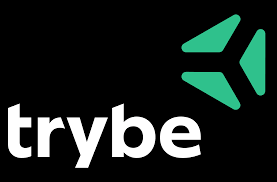
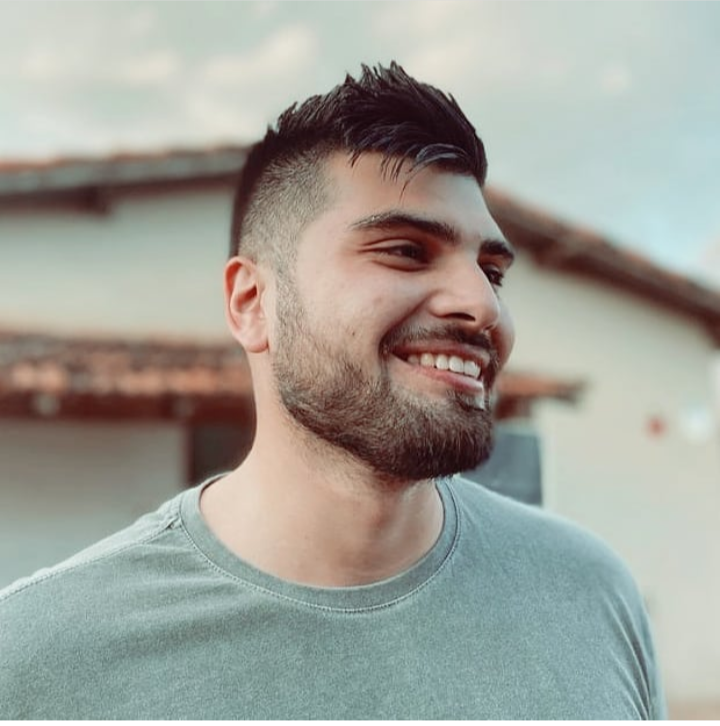

<!DOCTYPE html>
<html lang="pt-br">

</html>

<head>
  <meta charset="UTF-8" />
  <link rel="stylesheet" href="style.css" />
  <link rel="preconnect" href="https://fonts.googleapis.com">
  <link rel="preconnect" href="https://fonts.gstatic.com" crossorigin>
  <link
    href="https://fonts.googleapis.com/css2?family=Fascinate&family=Lora:ital,wght@1,700&family=Montserrat:ital,wght@0,100;0,200;0,300;0,400;0,500;0,600;0,700;0,800;0,900;1,100;1,200;1,300;1,400;1,500;1,600;1,700;1,800;1,900&display=swap"
    rel="stylesheet">

  <script src="https://kit.fontawesome.com/54d252bfd5.js" crossorigin="anonymous"></script>

  <title>Portfólio Matheus Repizo</title>
</head>

<body>
  <div class="gridcontainer">
    <header id="header">
      <h1><i class="fa-solid fa-address-card"></i>PORTFÓLIO<a href="https://www.instagram.com/matheus_repizo/"
          target="_blank"><i id="instagram" class="fa-brands fa-instagram fa-beat"></i></a>
        <a href="https://github.com/Matheus-Repizo" target="_blank"><i class="fa-brands fa-github fa-beat"></a></i>
        <a href="https://www.linkedin.com/in/matheus-repizo-88606a236" target="_blank"><i
            class="fa-brands fa-linkedin fa-beat"></i>
      </h1>

    </header>
    <nav id="nav">
      <ul>
        <li><a href="#quemsoueu">QUEM SOU EU</a></li>
        <li><a href="#experiencias">EXPERIÊNCIAS PROFISSIONAIS</a></li>
        <li><a href="#objetivos">OBJETIVOS</a></li>
      </ul>
    </nav>

    <main id="group">
      <article id="article">
        <h2 id="Lora">APRESENTAÇÃO</h2>
        <p id="Lora">
          O propósito deste portifólio é, no entanto, executar os aprendizados
          obtidos atráves da formação da Trybe, onde nos concede a oportunidade de
          aprender e também nos profissionalizar na aréa de Desenvolvimento Web.
          Porém, aproveito a oportunidade de incluir informações sobre mim, tanto de
          forma profissional como pessoal, para oportunidades de carreiras e até
          mesmo Networks futuros.
        </p>
        <section id="section">
          <h2 id="quemsoueu">QUEM SOU EU?</h2>
          <p>
            Meu nome é Matheus de Paula Repizo, nasci em São Paulo-SP e
            atualmente tenho 27 anos. Embora nascendo na capital, com apenas
            2(dois)anos de idade minha familia se mudou para a cidade de Santa
            Cruz do Rio Pardo-SP, onde ainda moro atualmente! <br>
            O que eu gosto de fazer esta relacionado a música, filmes
            e séries, jogos, onde sou muito apaixonado por tecnologia. Amo a parte criativa que consiste entre eles.<br>
            Me considero uma pessoa empática e que
            consegue se relacionar bem com os outros, embora minha vida social esteja um pouco "escassa" devido a minha
            rotina atual.<br>
            Estou buscando ingressar no ramo da tecnologia, onde encontrei grandes oportunidades com a TRYBE. Através
            dela estou aprendendo
            mais sobre a área de Desenvolvimento Web, que é o ponto inicial para que eu possa de alguma forma dar um
            start em minha carreira
            nesse mundo tão vasto e que, até então, explorei tão pouco.<br>
            Este é um resumo, do resumo sobre mim, mas o ponto principal é que estou disposto a me relacionar com muitas
            pessoas nessa comunidade enorme,
            não só para me conhecerem melhor, como também aprender com elas, evoluir, e até mesmo poder ensinar e passar
            meus conhecimentos futuros a muitas outras pessoas.

          </p>
        </section>
        <section id="section2">
          <h2 id="experiencias">EXPERIÊNCIAS PROFISSIONAIS</h2>
          <p>
            Profissionalmente, talvez como uma grande maioria, sempre passei por altos e baixos. De certa forma,
            devido a minha
            pouca experiência no passado, escolhi oportunidades de formas erradas que me levaram a situação que hoje me
            encontro.<br>
            Mas sempre busquei
            evoluir e aprender. Tenho bastante experiência com um pouco de tudo, e através da minha trajetória pude
            executar diversos tipos diferentes
            de habilidades, sejam elas hard skills e softs skills. Mas a área que mais executei em termos de duração,
            foram as vendas. Tanto de forma CLT,
            como Representante Comercial(PJ), foi a área que mais obtive aprendizado, principalmente em soft skills.
            Porém,
            pude analizar ao longo dos anos que não era uma área que eu poderia desenvolver todos os meus objetivos, foi
            ai que pude olhar pra minha vida e perceber que oque eu mais gostava de fazer e executar eu deixei de lado,
            e
            foi justamente a tecnologia. Fui desde Servente de Pedreiro e Office-Boy, até assistente
            Comercial/Administrativo e
            Representante Comercial de Produtos Alimenticios, mas nunca executei oque eu mais gostava, embora não abro
            mão de todos os
            meus aprendizados que adquiri durante todos esses processos.
          </p>

        </section>
        <section id="section3">
          <h2 id="objetivos">OBJETIVOS</h2>
          <ul>
            <li>Me formar na Trybe</li>
            <li>Conseguir espaço no mercado de trabalho em Desenvolvimento FullStack</li>
            <li>Cursar um ensino superior relacionado a Desenvolvimento de Softwares e Jogos</li>
            <li>Poder contribuir com a Comunidade com meus projetos</li>
            <li>Evoluir cada vez mais nesta área</li>

          </ul>
        </section>
      </article>
    </main>
    <aside id="aside">
      
      <h1 id="identification">Matheus de Paula Repizo</h1>
      <h1 id="identification2">Estudante da Trybe</h1>
    </aside>

    <footer id="footer">
      <br>
      <h2 id="rod">CSS3</h2>
      <h2 id="rod2">HTML5</h2>
      <a href="https://www.instagram.com/matheus_repizo/" target="_blank"><i id="instagramrod"
          class="fa-brands fa-instagram fa-beat fa-2x l"></i></a>
      <a href="https://github.com/Matheus-Repizo" target="_blank"><i id="gitrod"
          class="fa-brands fa-github fa-beat fa-2x l"></a></i>
      <a href="https://www.linkedin.com/in/matheus-repizo-88606a236" target="_blank"><i id="linkedinrod"
          class="fa-brands fa-linkedin fa-beat fa-2x l"></i>
    </footer>
  </div>
</body>